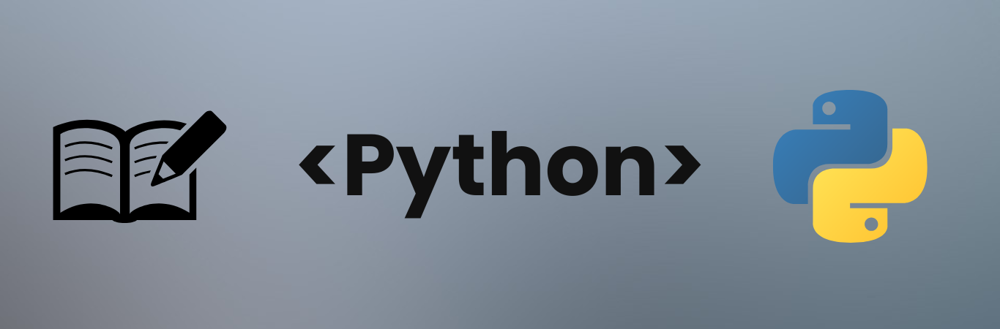
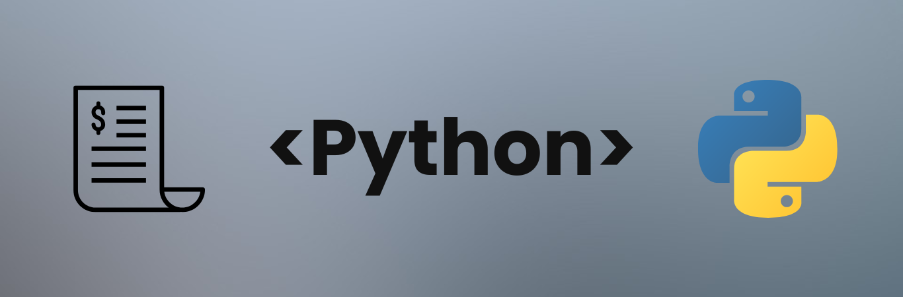
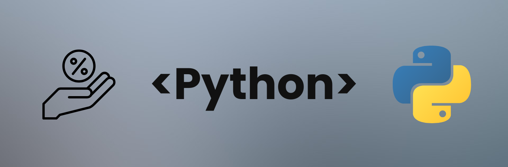
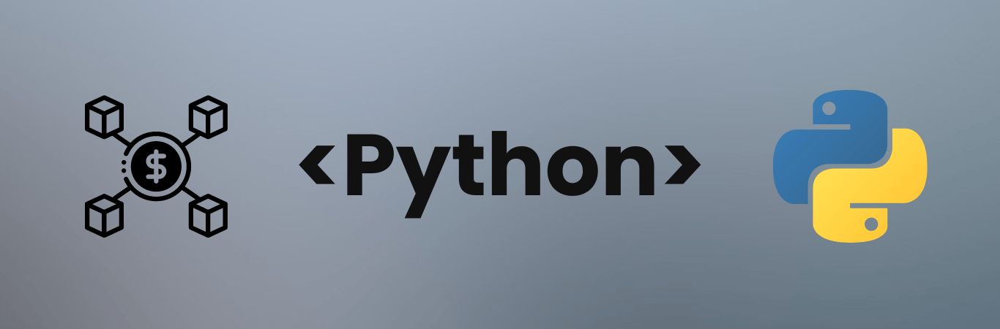
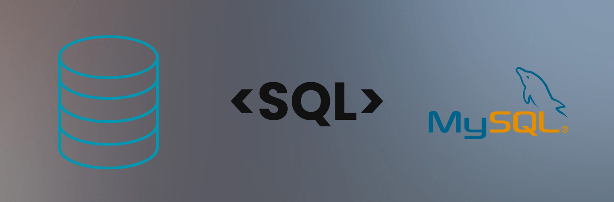
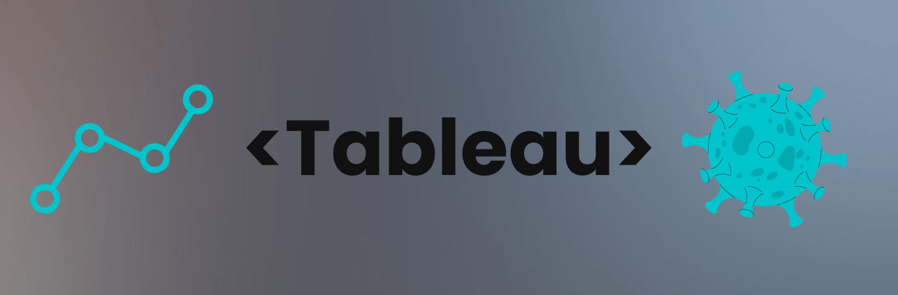
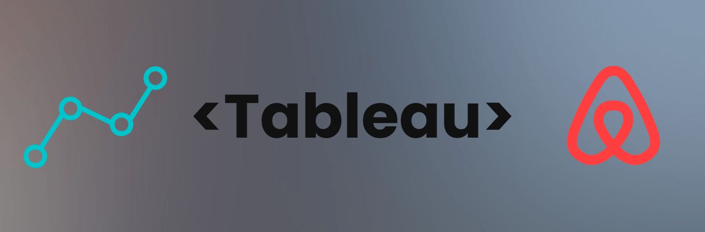

Intro
Welcome to my corner of the digital world. I'm Rafael Karcz, a globe-trotter and data enthusiast with a colorful academic
journey in International Management and Business Economics.
My toolkit is a mix of programming skills in Python, SQL, and Bash complemented by a proficiency in essential technologies and methodologies
like Git, OOP, Linux, and Agile, among others. In my work I've focused on using data to improve business processes and decision-making. My professional
journey reflects a commitment to leveraging technology to solve real-world problems efficiently. Or at the very least that is what I am trying to do.
But who am I beyond my professional life? An adventurer at heart. My travels took me from the bustling streets of Central America to the serene landscapes
of New Zealand, and currently to Japan. Globetrotting has taught me the value of adaptability and the beauty of diverse cultures.
These experiences fuel my vision for a better future.
Whether it's automating workflows to save hours of work or diving deep into data analytics to uncover insights, my goal is to blend my love for
data with my passion for making a difference.
If you're intrigued by the intersection of data analytics and global impact, or if you simply want to reach out and grab a coffee together,
let's connect and explore what we can achieve together.
Curriculum Vitae
Projects
Python
The Investor Calculator project is a Python-based tool for managing and analyzing company financial data. Leveraging SQLAlchemy for database operations,
this CLI tool allows users to create, read, update, and delete records while calculating key financial metrics. This project showcases my proficiency in database management,
financial data analysis, and Python development. The code is available for review and
collaboration here on GitHub.

The Article Scraper project retrieves and saves articles from a webpage, filtering them based on user input. Using Python libraries like BeautifulSoup and requests,
I built a tool that automates web scraping and organizes files efficiently. This project demonstrates my ability to work with web scraping and file management.
The project is available for review and collaboration here on GitHub.
The Article Scraper project retrieves and saves articles from a webpage, filtering them based on user input. Using Python libraries like BeautifulSoup and requests,
I built a tool that automates web scraping and organizes files efficiently. This project demonstrates my ability to work with web scraping and file management.
The project is available for review and collaboration here on GitHub.

This Bill Splitter project splits expenses among friends, with an optional feature to randomly exempt one friend from paying.
It demonstrates skills in handling user input, validating data, and implementing control flow in Python.
This project showcases my expertise in solving practical problems using Python. You can find the
complete project here on GitHub.

In this Python-based Loan Calculator project, I developed a tool that calculates monthly and differentiated loan payments.
This project focuses on user input handling, error checking, and implementing financial formulas. It showcases my ability to build user-friendly command-line
applications and implement real-world financial calculations. The complete project is available for review
and collaboration here on GitHub.

In this Cryptocurrency Data Collection and Visualization project, I utilized Jupyter Lab to fetch and visualize cryptocurrency data from the CoinMarketCap API.
This project involved data collection, manipulation, and visualization using Python libraries such as Pandas, Matplotlib, and Seaborn.
It showcases my ability to work with APIs, handle large datasets, and create insightful visualizations. The complete project is available for review
and collaboration here on GitHub.
In the Python Correlation Analysis project, I worked in jupyter lab to explore and analyze the movies.csv dataset, focusing on uncovering correlations between various
film industry metrics. This project enhanced my skills in data manipulation, visualization, and statistical analysis using libraries like Pandas and Matplotlib.
It also serves as an educational tool for others keen on learning data science techniques or exploring film industry trends. The entire project is openly available for review and collaboration
here on GitHub.
The Amazon Web Scraper Project is a Python script designed in Jupyter Lab to monitor Amazon product prices, utilizing BeautifulSoup for data extraction. It logs details
into a CSV and alerts users via email when prices drop below a set threshold. This tool is useful for snagging deals and enhances my web scraping skills.
The project is available for review and collaboration
here on GitHub.
SQL

In the Data Cleaning SQL project for the NashvilleHousing dataset, I engineered SQL scripts aimed at refining and optimizing data structures
and quality, which sharpened my database management skills. This initiative not only advanced my proficiency in SQL operations
and data standardization but can also serve as a versatile resource for others interested in data processing enhancements. The complete project is
publicly accessible here on GitHub, for collaboration and further development.
In my COVID-19 Data Exploration with SQL project, I crafted a suite of SQL scripts to dissect and analyze global data on COVID-19,
focusing on critical metrics like death rates and vaccine distribution. Through this endeavor I was able to not only advanced my SQL capabilities in handling
complex queries and data structures but I was also able analytically and critically view and understanding the pandemic's dynamics. This project, combining educational
insights with practical data analysis, is publicly available here on GitHub
to encourage ongoing research and collaborative development.

In my Expense Tracker Project, I developed a SQL-based tool for personal finance management, enhancing my skills in database design,
CRUD operations, and data analysis. This project served me as both a practical tool for tracking financial transactions and an educational resource,
deepening my understanding of SQL through hands-on application and analysis of personal expense and income patterns. This
project is publicly available here on GitHub for reuse and collaboration.
Tableau
In this Tableau project, I analyzed publicly available sales data from a company, creating a dynamic and interactive dashboard. Key features include total sales,
profit, and quantity indicators with trend arrows and sparklines comparing the current year to the previous year. A dual bar chart compares sales and profits by subcategory,
highlighting performance with colored bars and dots for declines. The dashboard also includes sales and profit trends over time with average lines and dynamic color coding.
Explore the interactive dashboard here on Tableau Public.

In the "COVID-19 Global Analysis" Tableau dashboard, I visualize key pandemic metrics like total cases and death rates worldwide. The dashboard features a bar chart of deaths per continent,
a color-coded infection rate map, and a line chart with monthly infection percentages and forecasts up to October 2021. Explore the interactive and clear visualizations
here on Tableau Public to view COVID-19's trends globally.

In this Tableau project, I analyzed Airbnb's 2016 pricing data for Seattle, focusing on the average price per bedroom and the influence of location on pricing.
The analysis includes a bar chart of prices by bedroom number, a map and bar chart detailing average prices by zip code, and a line chart tracking weekly
revenue trends throughout the year. With this project I solidified my ability to extract actionable insights from complex datasets and visually communicate trends and
patterns in the hospitality market. This project is publicly available
here on Tableau Public.
BASH
This project was all about creating a Bash script-based True or False Game that offers an engaging way to test knowledge with dynamically fetched true or false questions.
The game features real-time question fetching from a local API, secure user authentication, score tracking, and encouragement messages,
all wrapped in a simple user interface. It's designed for easy installation and usage. This project is publicly available
here on GitHub for reuse and collaboration.
I created the Hyper Commander project to have a user-friendly Bash utility available; sort of like a co-pilot while working in the terminal. The Hyper Commander is designed to streamline
file and system operations through an intuitive command-line interface. It's tailored for users of all skill levels and offers a menu-driven approach to accessing operating
system information, managing user details, and handling file operations such as deletion, renaming, and permission changes. You can download or view more information about this project
here on GitHub.
Enigma is a Bash script I developed, which focuses on streamlining file management with the added benefit of AES-256 encryption for security. It allows users to create, read, encrypt,
and decrypt text files through a user-friendly menu interface, incorporating input validation for error prevention and consistency. You can find out more on how to collaborate or download
Enigma here on GitHub.
Excel
In the Bicycle Market Analysis project, I utilized Excel 2016 to cleanse and organize a detailed sales dataset, crafting an interactive dashboard that illustrates
buying trends across demographics. My work includes advanced VLOOKUP queries and dynamic visualizations, emphasizing my ability to distill complex information into accessible and actionable insights.
This project showcases robust analytical techniques through Excel’s powerful features. View the dashboard, the analysis, and the lookup queries
here on GitHub.
OTHER
In my capstone project at the Wharton School, I developed a comprehensive strategy to counteract the impact of ad-blocking on digital advertising
revenues for companies like Google and Yahoo. I focused on user-friendly ad formats and relevance through business analytics. This project sharpened
my ability to analyze data, innovate based on insights, and adapt strategies dynamically. The result showcases my proficiency in addressing
contemporary digital challenges with data-driven solutions. You can view this project
here.